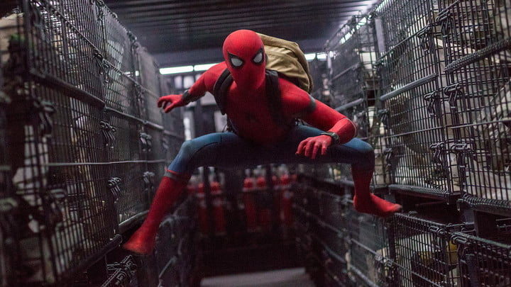

Spider-Man: Lejos de casa (en inglés: Spider-Man: Far From Home) es una película estadounidense de superhéroes de 2019 basada en el personaje de Spider-Man, perteneciente a Marvel Comics, producida por Columbia Pictures y Marvel Studios y distribuida por Sony Pictures Entertainment. Es la secuela de Spider-Man: Homecoming. (2017), la película número 23 en el Universo cinematográfico de Marvel y la última de la Fase 3 y de la «Infinity Saga». La cinta es dirigida por Jon Watts y escrita por Chris McKenna y Erik Sommers, y es protagonizada por Tom Holland como Peter Parker / Spider-Man, junto a Samuel L. Jackson, Zendaya, Cobie Smulders, Jon Favreau, J. B. Smoove, Jacob Batalon, Martin Starr, Marisa Tomei, y Jake Gyllenhaal. En la película, Parker es reclutado por Nick Fury (Jackson) y Mysterio (Gyllenhaal) para enfrentarse a los Elementales mientras él está en un viaje escolar a Europa.
Posteriormente a los eventos de Avengers: Endgame, y tras 8 meses de la muerte de su mentor Tony Stark, Peter Parker decide pasar unas merecidas vacaciones en Europa junto a sus amigos Ned Leeds y Michelle; pero sus planes al final se ven truncados cuando Nick Fury le encomienda una nueva misión: frenar el ataque de unas criaturas que están causando el caos en el continente. En ‘Lejos de casa’ se explora el peso de verse a sí mismo como el posible sucesor de Iron Man y al mismo tiempo es el superhéroe con más cicatrices a nivel personal por la muerte de Tony. Por ese lado habría resultado menos adecuado que el primero en aparecer con una aventura propia fuera cualquier otro, sobre todo tras el final dado a Steve Rogers, ya que, aunque a otro nivel tampoco habría desentonado de haber sido el Capitán América.
No todo ha vuelto exactamente a ser como antes tras el chasquido de Thanos posteriormente “eliminado” por Iron Man. La mitad de la humanidad desapareció durante varios años mientras el resto intentó seguir adelante con sus vidas. Un cambio que sin duda impactó en la vida de muchos y que podría haberse abordado de una forma más dramática, pero la luz ha vuelto al universo Marvel tras ‘Endgame’ y ‘Spider-Man: Lejos de casa’ era la oportunidad idónea para subrayarlo.